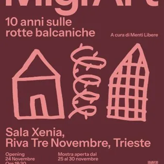

da mar 24 nov a lun 30 nov
“MigrArt. Dieci anni sulle rotte balcaniche” - Mostra ed eventi collaterali
Basta un rotolo di carta steso a terra perché un confine diventi un luogo d’incontro. Saranno i disegni, i volti e le testimonianze di chi attraversa le rotte balcaniche i protagonisti di “MigrArt. Dieci anni sulle rotte balcaniche”. La mostra sarà ospitata da sala Xenia a…
 Indicazioni
Indicazioni
- Costi e prenotazioni
- Costo non indicato · Prenotazione non indicata
- Programma
- Programma da verificare. Apri la fonte ufficiale per orari e possibili aggiornamenti.
- In caso di maltempo
- Nessuna indicazione specifica pubblicata.
- Note
- Acquisito automaticamente dalla fonte.
L’EVENTO
Descrizione completa
Basta un rotolo di carta steso a terra perché un confine diventi un luogo d’incontro. Saranno i disegni, i volti e le testimonianze di chi attraversa le rotte balcaniche i protagonisti di “MigrArt. Dieci anni sulle rotte balcaniche”.
La mostra sarà ospitata da sala Xenia a Trieste dal 24 al 30 novembre 2026 e offrirà al pubblico uno sguardo sulle migrazioni attraverso un linguaggio universale, quello dell’arte, capace di superare qualsiasi tipo di confine.
Orari: lunedì, mercoledì e giovedi dalle 16 alle 19, venerdì, sabato e domenica dalle 10 alle 19. Il viaggio di Menti Libere è iniziato nel 2015 e ripreso dieci anni dopo, per raccontare come siano cambiati i percorsi migratori, ma soprattutto per restituire voce e dignità alle persone che li attraversano: «“ MigrArt: L’arte come incontro” è nato nell’ottobre 2015, quando la rotta balcanica era il principale accesso all’Europa per centinaia di migliaia di persone in fuga da guerre, persecuzioni e povertà. All’epoca decidemmo di percorrerla a ritroso, da piazza Transalpina tra Gorizia e Nova Gorica fino al confine turco-siriano. L’obiettivo era documentare quanto stava accadendo e offrire sostegno nei campi spontanei di accoglienza », hanno raccontato dal collettivo. Con loro un rotolo di carta lungo trenta metri, steso a terra nei principali luoghi di transito. Un semplice foglio bianco che si fece strumento di incontro: persone di ogni età e provenienza lasciarono messaggi di pace e frammenti di vita. Dieci anni dopo, Menti Libere è tornato in quei luoghi con un nuovo rotolo di carta, raccogliendo nuove storie. Il risultato di questi due viaggi prenderà forma nell’esposizione triestina, che inviterà i visitatori a interrogarsi sul significato delle migrazioni e sul ruolo dei confini in un’Europa in continua trasformazione. Ad accompagnare l’esposizione anche un calendario di appuntamenti aperti alla cittadinanza. L’inaugurazione è prevista per il 24 novembre alle 18.30 , con un vernissage performativo che permetterà di rivivere e condividere il gesto simbolico da cui, dieci anni fa, prese avvio il progetto. Il 25 novembre alle 17.30 sarà la volta di un incontro dedicato al fumetto “I Disconosciuti” (Becco Giallo, 2024) in presenza di uno degli autori, il sociologo e ricercatore Francesco Della Puppa.
Il 26 novembre, alle 15.00 , il programma proseguirà con un laboratorio femminile di cucito organizzato da IRC (International Rescue Committee) e un panel di confronto con diverse realtà impegnate sul territorio triestino nell’accoglienza e nel sostegno alle donne migranti, previsto per le 17.30. Il 29 novembre, alle 18.30 , sarà invece dedicato al finissage, una serata conclusiva all’insegna della convivialità e dell’incontro tra culture. Il pubblico potrà condividere il cibo preparato da un ristorante afgano e partecipare a un’attività performativa che chiuderà il programma degli eventi.
IL PROGRAMMA
Programma e orari
Appuntamenti raccolti dalle fonti elencate. Dove manca un orario, non è ancora disponibile in questa scheda.
Programma pubblicato
- Dal 2026-11-24 al 2026-11-30
INFORMAZIONI UTILI
Prima di partire
- Controllare la fonte prima di partire.
ORGANIZZAZIONE